Robust low-light image restoration and enhancement
Technical solution report. Two methods restore each photo, one classical and one learned, and a controller decides how much of each to keep.
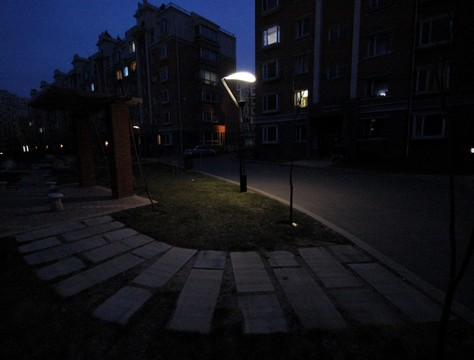
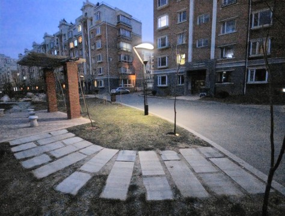
| Problem ID | P1 |
| Problem title | Robust Low-Light Image Restoration and Enhancement |
| Team | V-Max (T46), section E |
| Team members | Sharadh Naidu1RUA24CSE0421 Shivani1RUA24CSE0430
S. V. Swamy1RUA24CSE0468 Sumukha K1RUA24CSE0483 |
| GitHub repository | github.com/SharadhNaidu/resen, commit {{COMMIT}} |
| Live demo | resenh.sharadh.blog runs in the browser. The package is on PyPI, and a Colab notebook shows it in use. |
1Problem understanding and solution strategy
Core technical challenge. A photo taken in the dark holds little light and a lot of sensor noise. Brightening it raises the noise too, pulls colours off true, burns lamps and windows to white, and overexposes any part of the scene that was already lit. No single fixed curve gets all of this right, because each photo needs its own amount of gain, denoising and contrast.
We also set three constraints. The result has to arrive within 10 seconds on an ordinary laptop or phone, without a server. The evaluation has to be reproducible, using plain PSNR with nothing tuned on the test set. And the work has to ship as a package anyone can install.
Proposed methodology. We measure the photo first and derive every setting from what we measure. Two methods then restore it. The classical pipeline is predictable and never adds detail that was not there. The Retinexformer network recovers colour and texture far better, but it sometimes invents them. A quality controller compares each output with the input and gives more weight to the one with fewer faults. We chose this design over a single fixed method because each method fails on photos the other handles well. On clean benchmark images the hybrid scores the same as the network, and when the network's output fails the controller's checks, the classical result takes over.
2Technical architecture and implementation
resenh.enhance processes a photo. The analyzer's measurements set the parameters of both methods. The fine-tuned network also takes two classical outputs, the illumination map and the Retinex result, as extra input channels. The controller, highlighted, makes the final blend. The code is in src/resenh/: analysis.py, classical/, models/, controller.py and pipeline.py.2.1 Classical algorithmic baseline
Algorithms. At each pixel we take the brightest of the three colour channels as a first estimate of the light falling there, then smooth that map with a guided filter. Dividing the image by this illumination map, raised to a power γ, brightens it in the Retinex style used by LIME (reflectance = image ÷ illuminationγ). Then come guided or bilateral denoising matched to the noise level, CLAHE on the brightness channel, gray-world white balance and highlight protection.
Adaptive selection logic. The analyzer measures seven statistics, and each parameter is a clipped linear function of one or two of them. We fitted the thresholds on training and validation images; the test images played no part.
2.2 Deep learning pipeline
Model. Retinexformer (ICCV 2023), a Retinex-based transformer with 1.6 million parameters that restores an image in one pass. In the independent audit we followed, it had the highest plain PSNR of any model with released code on LOL-v1 and LOL-v2-Syn, and was close to the best on LOL-v2-Real. It is also small enough to run in a browser through ONNX Runtime Web: the first visit downloads about 40 MB, which the browser then caches.
Loss and training. We fine-tuned from the official checkpoints. The first layer got extra input channels for the classical outputs, with their weights set to zero, so training begins exactly at the official model. The loss is Charbonnier + 0.2·(1−SSIM) + 0.02·VGG-19 perceptual, wrapped in the GT-mean loss (ICCV 2025). Training patches grew from 128 to 256 to 384 pixels, we kept a moving average of the weights (EMA 0.999), and we varied gamma and added noise at random. Each benchmark has its own model: LOL-v1 (485 training pairs), LOL-v2-Real (689) and LOL-v2-Syn (900). We also trained a generalist model on LOL and LSRW together: 5,600 pairs once duplicates were removed. Training and validation images were split by scene, so no scene appears in both.
2.3 Hybrid integration and adaptive mechanism
Fusion strategy. The classical side guides the network at three points. Before the network, a noise gate denoises the input in proportion to the noise it measured. Inside the fine-tuned network, the illumination map and the Retinex result arrive as extra inputs. After the network, the controller compares both outputs with the input.
Decision logic. For each output the controller measures four things against the input: highlights that were not clipped before but are now, change in colour, how many edges survive, and how much the noise grew. Together they give a penalty, and each output's weight is w ∝ prior · exp(−penalty / T). The prior favours the network when the input is very dark. After blending, highlight protection restores lamps that the network pushed to white, and a photo that was already bright is pulled back towards the original.
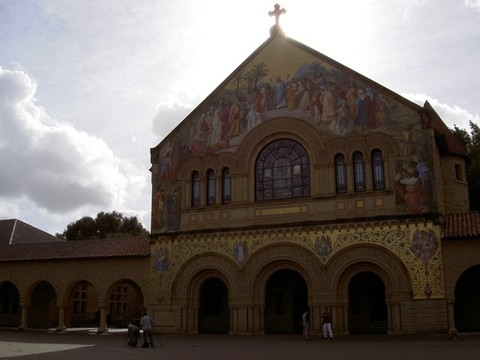
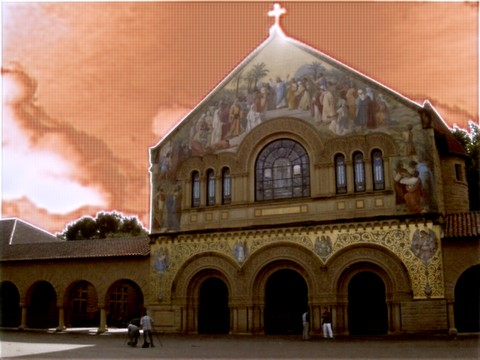
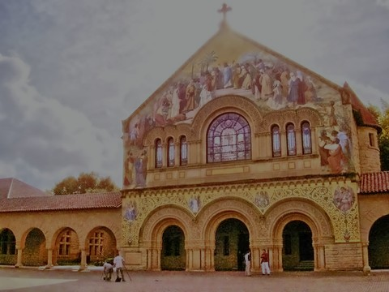
| Guard | Network | Classical |
|---|
3Experimental benchmarks and evaluation
Protocol. PSNR is measured in RGB on the saved 8-bit image, with no ground-truth brightness correction and no per-image settings. SSIM follows the MATLAB implementation, LPIPS uses AlexNet, and NIQE uses niqe_matlab from pyiqa. Before comparing anything, we checked that our evaluation code reproduces the official Retinexformer scores exactly: 25.15, 22.79 and 25.67 dB. The full tables, with 95% confidence intervals and the noise and edge metrics, are in eval_P1_T46.md.
3.1 Quantitative benchmarks
| LOL-v2-Real test, 100 pairs | PSNR (dB) ↑ | SSIM ↑ | LPIPS ↓ / NIQE ↓ | Latency, ms per MP |
|---|
Analysis. The network supplies almost all of the accuracy. Against the classical method it adds 5 to 9 dB of PSNR and about 0.1 of SSIM, and it halves LPIPS. NIQE, which judges naturalness without a reference, ranks them the other way: on all four unseen photo sets the classical output scores better, for example 3.21 against 3.84 on DICM. The controller costs almost nothing on clean benchmark images (+0.03 dB on LOL-v2-Real). On the photo in Figure 2, it is what keeps the orange sky out of the result. On an RTX 4070 laptop GPU, a one-megapixel photo takes {{GPU_C}} s with the classical method, {{GPU_D}} s with the network alone and {{GPU_H}} s with the hybrid. The hybrid takes longest because its classical steps and priors run on the CPU. On the laptop's CPU alone the hybrid takes {{CPU_H}} s, and in a laptop browser with WebGPU about 6 s.
Unseen camera: LSRW
| LSRW test, 50 pairs | PSNR | SSIM | LPIPS |
|---|
Unseen photos, no ground truth
| Set | NIQE, network | NIQE, classical |
|---|
3.2 Visual outputs and intermediate representations
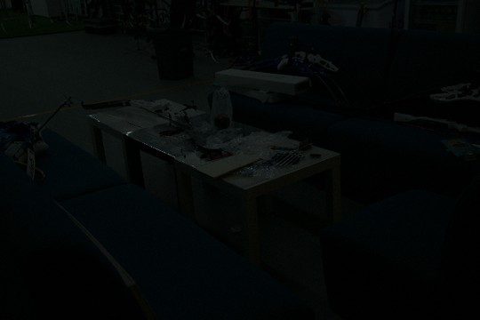
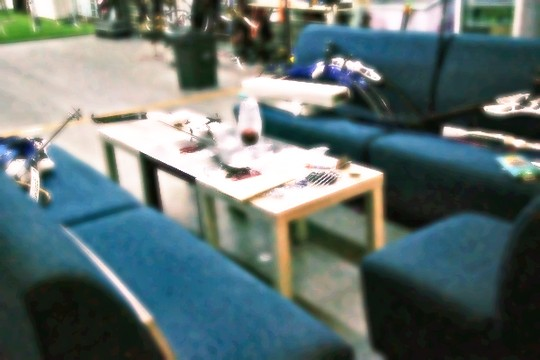
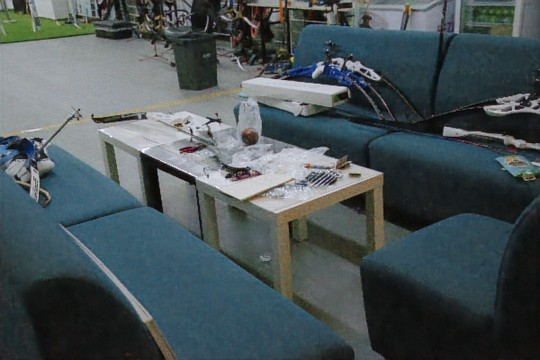
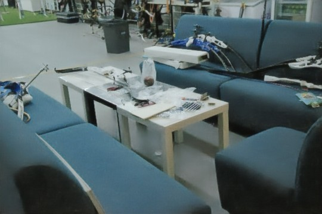
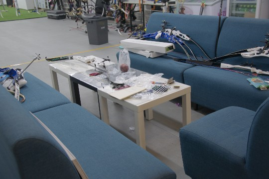
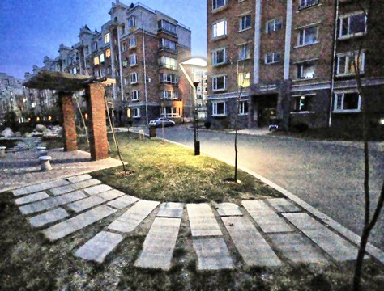
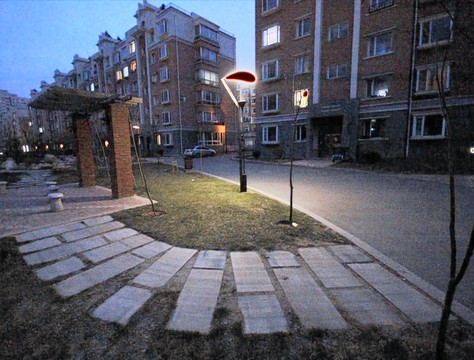
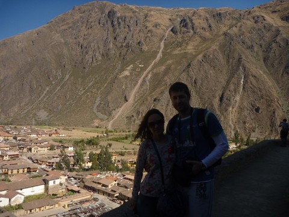
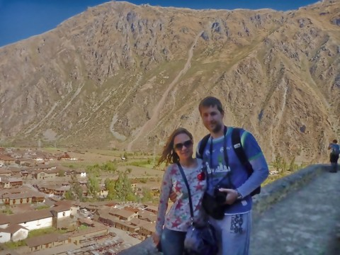
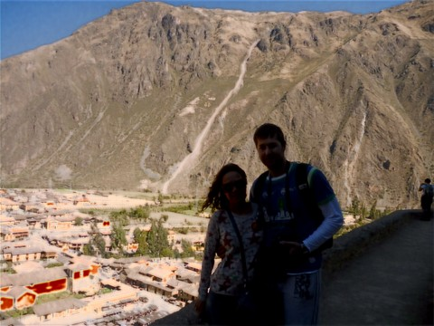
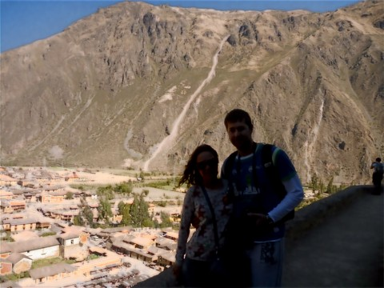
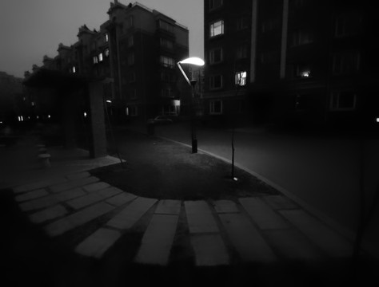
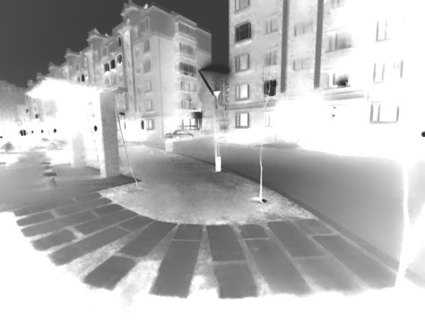
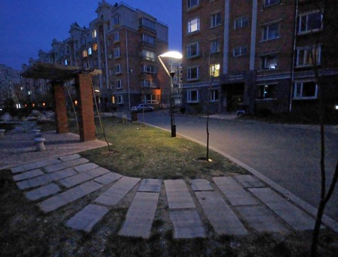


res.stages returns these images, and the web demo shows them in its "Every stage" tab.3.3 Ablation study
robust, the default, and benchmark.4Deployment and quickstart
# 1. Install (Python 3.10+; add [dl] for the network, omit it for classical-only) pip install "resenh[dl]" # 2. Enhance a folder of photos resenh enhance ./samples/ -o ./results/ # --mode hybrid | dl | classical # 3. Or from Python, in Jupyter, Colab or Kaggle import resenh res = resenh.enhance("night.jpg") res.save("night_restored.png"); print(res.summary()) # Reproduce the evaluation git clone {{REPO}} && cd resen && pip install -e ".[dl,eval]" python eval/run_eval.py --bench lolv1 lolv2_real lolv2_syn --methods classical "net:retinexformer-{bench}" "hybrid-bench:retinexformer-{bench}" --niqe python eval/make_report.py
Deployment formats. The web app, built with React and shadcn/ui, runs the same Python package inside the browser through Pyodide. The network runs in ONNX Runtime Web, on WebGPU where available and WebAssembly elsewhere. Cloudflare serves the site as static files, so there is no server to sleep or queue requests, and photos never leave the device. The Python package and command-line tool are on PyPI as resenh. They fetch the weights from Hugging Face on first use and check each file's SHA-256. The repository also includes a Gradio app (resenh app), a Dockerfile and a quickstart notebook for Colab and Kaggle.
Submission checklist
- Public GitHub repository with an updated README
- No raw code pasted into this report
- Every metric is reproducible with
eval/run_eval.py - Team details recorded: V-Max, T46, section E